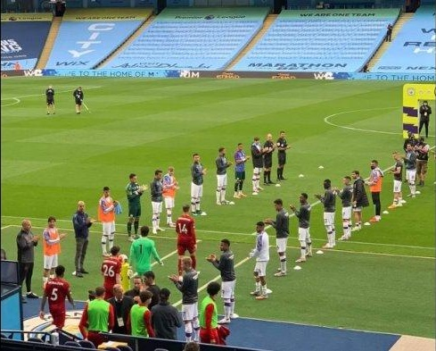

About this Audio
 |
|

Baru saja juara, Liverpool malah dibantai oleh Man. City dengan skor tanpa balas, 4-0. Liverpool secara mengejutkan dibantai telak 4-0 oleh tuan rumah, Man. City. Baru saja Liverpool merayakan gelar juara Premier League setelah 30 tahun lamanya, dan diberikan gelar Guard of Honour, malah dibantai tanpa balas gol, 4-0 oleh Man. City. >>> Baca Selengkapnya |
|
Bisa Jebol Produk Microsoft Ini? Ganjarannya Rp 4,2 Miliar Microsoft menantang para Hacker untuk membobol layanan infrastruktur cloud mereka, Azure. Jika mereke berhasil membobol layanan infrastruktur cloud mereka, yaitu, Azure. Maka, mereka bisa mendapatkan ganjaran sebesar Rp 4,2 Miliar. Sungguh menggiurkan bukan ? >>> Baca Selengkapnya |
|
Sony PS5 dirilis pada Bulan depan Sony merencanakan acara pengungkapan untuk PS5 pada 4 Juni mendatang. Hal terus menurut postingan terbaru pada laman ResetEra oleh reporter GamesBeat Jeffrey Grubb, demikian dilansir JawaPos.com via ScreenRant, Jumat (1/5). Sony belum mengonfirmasi pengumuman ini, sehingga tidak boleh dianggap sebagai kebenaran resmi. Tetapi sumbernya kali ini lebih dapat diandalkan dibandingkan dengan rumor PlayStation 5 sebelumnya. PlayStation 5 secara resmi diumumkan akhir tahun lalu, tetapi sedikit informasi tentang konsol video game baru yang terungkap saat itu. Sejak itu, kebocoran dan desas-desus tentang konsol PS5 yang akan datang sering muncul, meskipun sebagian besar tidak dikonfirmasi oleh Sony. Awalnya, sebuah acara mengungkapkan dikabarkan untuk bulan Februari, tetapi kemudian didorong kembali ke Mei. Sekarang, menurut Grubb, acara akan berlangsung pada bulan Juni. >>> Baca Selengkapnya |
| Halaman
|